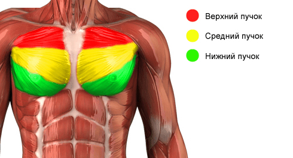

Мы продолжаем нашу серию продвинутых инфопостов про базовые упражнения. После подтягиваний и приседаний настал черёд разбора отжиманий от пола.
Казалось бы, мы уже рассказали о них всё, что можно, ещё в рамках видео-обзора. Тем не менее отжимания — это ключевое упражнение в деле построения верха тела, и особенно грудных мышц, трицепса и дельт. Кто-то скажет, что брусья лучше, но на самом деле брусья дают несколько другую нагрузку, и поэтому мы поговорим о них позже.
Чтобы лучше понимать сегодняшний инфопост, нужно провести небольшой экскурс в анатомию грудных мышц:

То есть грудные мышцы анатомически состоят из трех пучков, и благодаря различным видам отжиманий можно смещать нагрузку с одних частей на другие. Стоит заметить, что только такой подход позволит вам достичь оптимального результата и получить сбалансированное телосложение. Мы сейчас говорим не только, и не сколько про программу SOTKA, сколько про дальнейшее ваше развитие, так что если какая-то группа отстаёт, то стоит давать ей больше нагрузки, и фокусировать своё внимание именно на ней.
В зависимости от положения ног относительно грудных мышц вы тренируете разные участки мышц по вертикальной оси. Чем выше грудные мышцы над ногами, тем больше вы тренируете нижнюю часть грудных мышц, соответственно, чем выше ноги над грудными, тем больше вы тренируете верхнюю часть грудных.
Отжимания на брусьях, в этом ключе, представляют собой конечное возможное положение ног относительно грудных мышц, которое отлично подходит для прокачки именно нижней части грудных мышц.
Далее хотелось бы в очередной раз (но далеко не в последний в рамках нашей программы) разрушить популярный миф, касающийся грудных мышц. Дело в том, что в интернете довольно часто можно обнаружить информацию о так называемых "внутренних грудных мышцах" и "внешних грудных мышцах" в зависимости от того, находятся они ближе к середине тела или ближе к его краям. Как вы уже видели выше на картинке, АНАТОМИЧЕСКИ такого разделения нет, а это значит, что нет и не может быть упражнений, которые бы задействовали только внешнюю часть грудных или только внутреннюю, потому что мышца напрягается равномерно по всей длине.
А с чем тогда связано, что при одних упражнениях вы испытываете ощущения в центре грудных, а при других — на внешней части? Дело в том, что именно в этих местах располагается крепление мышц к кости, которое тоже испытывает нагрузку во время тренировки. И именно оно и болит потом, а не сама мышца.
Так что зависимости между шириной постановки рук по горизонтальной оси и разными участками грудных мышц нет. Но есть прямая зависимость между шириной постановки и тем, насколько грудные в принципе включаются в выполнение упражнения.
Как вы помните из первого инфопоста про отжимания и из видео, одной из главных функций грудных мышц является приведение плеча. Но если вы ставите руки УЖЕ, чем ширина плеч, то ваше плечо уже оказывается приведено, и основная работа происходит не в плечевом суставе, а в локтевом (фактически отжимания с узкой постановкой рук в значительно большей степени осуществляются за счет мышц разгибателей локтя (трицепсов), а не за счет грудных мышц). Соответственно, постановка рук ШИРЕ плеч позволяет больше задействовать грудные мышцы. Это все довольно сложно объяснить словами и без картинок, и на видео это будет лучше видно, но я надеюсь, что основную идею вы поняли.
И ещё один момент, о котором стоит рассказать в контексте продвинутых версий отжиманий, это про положение рук вдоль центральной линии тела. По умолчанию, в отжиманиях от пола руки стоят на том же уровне, что и плечи. Однако, если поставить их ближе к животу, то нагрузка в большей степени будет переходить с грудных мышц на мышцы плечевого пояса, и чем дальше уходит корпус вперед, тем в большей степени нагрузка будет идти на передние дельты. Это просто ещё один момент, который делает отжимания значительно более функциональным, полезным и эффективным упражнением, чем многие привыкли думать.
Вообще, хотим заметить, что тренировочный процесс ВСЕГДА строится на биомеханике и физике, и поэтому всё, что требуется для достижения результата — понять, как устроено тело, и что нужно с ним делать. Это важно и при выполнении разных видов отжиманий, потому что позволяет вам понять, правильно ли вы делаете упражнение (нагружая целевые мышцы, которые вы хотите развить) или нет.